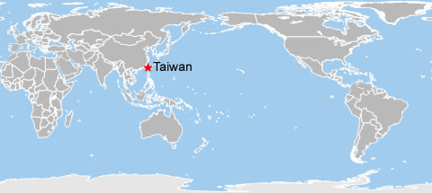
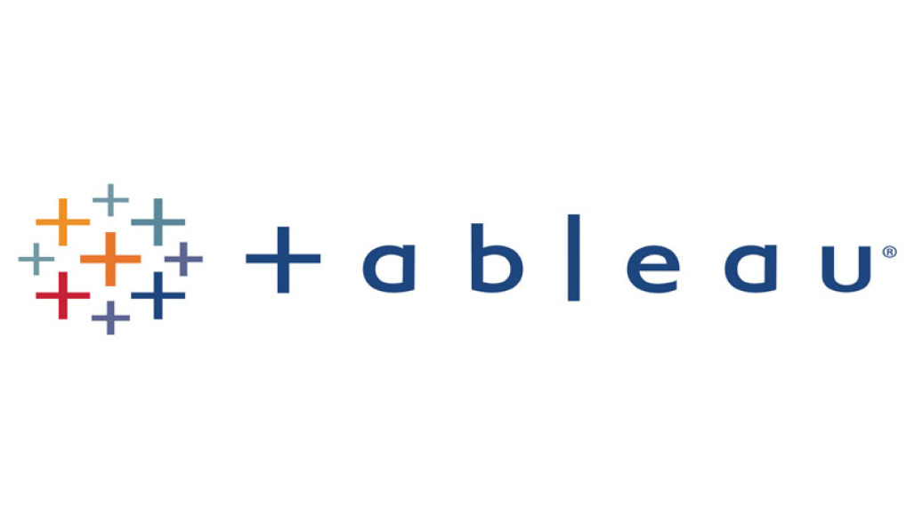
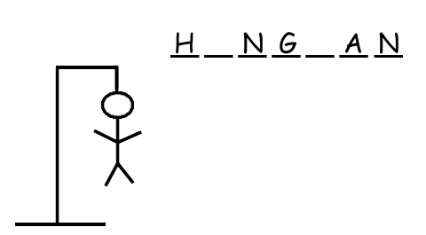
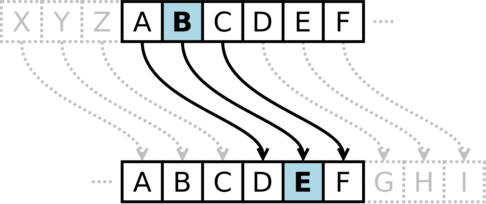

Skill: Python
(Data exploration and visualization)

Utilized Python to analyze global population growth, and various indicators that may affect the population and its associations. Especially took a closer look at Taiwan where I grew up. Created an reports on Jupyter Notebook.
It will be updated later to further understand the world and global poverty.
- Libraries/packages used: numpy, pandas, ipywidgets and matplotlib
Skill: R
(Data cleaning, exploration and visualization)
Bellabeat Case Study:
I analyzed a dataset containing 2-month usage data from 30+ eligible Fitbit users to gain insights into the user habits of health-focused smart device.
Performed exploratory data analysis in R, ran scripts in RStudio and created reports using R Markdown on Kaggle.
Finally, identified the major customer groups and developed action plans to inform marketing strategy.
- Libraries/packages used: tidyverse (dplyr, tidyr, ggplot2)
Skill: SQL
(Data exploration)

Imported the Covid Deaths and Vaccinations tables with the correct data type for each column.
Analyzed and performed SQL queries on COVID-19 dataset to understand the global distribution of deaths and infection rates, and published a dashboard on Tableau Public for visualization.
- Skills used: sort, filter, aggregate functions, joins, CTEs, views
Tool: Tableau
(Data visualization)

My Tableau dashboard for COVID-19 data exploration, including the global infected number, total deaths per continent, and projected percentage of infected population per country.

Welcome to the game, Hangman!
This project used Python to write a small game called Hangman. The computer randomly selects a Secret Word and tells the player how many letters it contains. The player guesses one letter per round and gets feedback immediately about whether the guess appears in the Secret Word and a display of the partially guessed word. The default is eight guesses, but it can be configured.
- Skills used: for loops, while loops, functions, String/list operations, module import

Encrypting with the Caesar Cipher
This project used Python to encrypt and decrypt messages with the Caesar Cipher. The idea of the Caesar Cipher is to pick an integer and shift every letter of the message by that integer alphabetically. The user provides a plain text message and the integer, which can be encrypted by using the PlaintextMessage function. The user can also provide an encrypted text message, and the CiphertextMessage function can be used to decrypt it.
- Skills used: for loops, while loops, functions, String/list operations, Assertions/Exceptions, Classes/Inheritance, Dictionaries, module import, getter/setter
Scrabble with your computer (or “SkyNet” if you like)
This project used Python to write a small game called Scrabble. The computer generates a list of letters, and the user can enter words made up of these letters. The computer checks whether the word is valid and assigns the appropriate score. If the user plays all the letters on the first try, he or she will get 50 bonus points. The game allows the user to play an arbitrary number of hands. The user can choose to play a new, random hand or replay the last hand.
An updated version
enables the computer (aka “SkyNet”) to play the game. The user can compare his or her score to the computer's performance.
- Skills used: for loops, while loops, functions, String/list operations, Dictionaries, Assertions/Exceptions, module import
Skill: Python
(Calculations)

Understand the power of compound interest
This program performs several calculations.
- It calculates the credit card balance after one year if the cardholder only pays the minimum monthly payment required each month.
- It calculates the minimum fixed monthly payment required to pay off the credit card balance within 12 months.
- It uses a binary search to optimize the program and find the minimum fixed monthly payment required to pay off the credit card balance within 12 months.
- Skills used: for loops, while loops, Bisection Search